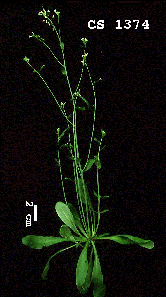

ABRC News

Arabidopsis Biological Resource Center
Room 309 Botany & Zoology Bldg.
Ohio State University
1735 Neil Ave.
Columbus, OH 43210
USA
phone: +6142929371
fax: +6142920603
email: arabidopsis+@osu.edu
AIMS WWW Server URL: http://aims.cps.msu.edu/aims/
New Stocks and Catalog
The 1995 ABRC Stock List has just gone to press and should be mailed within three weeks. Many new seed and DNA stocks are included in this edition. The collection of characterized mutants now numbers approximately 300. 1600 new T-DNA tagged lines, 100 transposon tagged lines, promoter trap lines and 200 recombinant inbred lines are among the seed additions. Besides the Redei collection, we now have available most of the 300 ecotypes and 100 form mutants of the Kranz, Arabidopsis Information Service (AIS) collection. In addition to standard bulk propagations of the AIS ecotypes, we now have available single-seed stocks of most of this collection. The stocks should be very useful for researcher wishing to use this diverse collection in experiments requiring initially homozygous material. Note that the seed supplies of these lines are currently somewhat more limited than for the bulk lines, and the latter should be used for standard phenotypic screenings.Major advancements have been achieved recently in DNA holdings. We have received two very useful cosmid libraries and now possess several cDNA and one genomic library. The collection of cloned genes numbers near 100 and is growing rapidly as are the holdings of RFLP stocks. In addition, we have just received 9,000 new EST clones from Michigan State University (MSU). These, along with the 3,000 Centre National de la Recherche Scientifique (CNRS) and 4,000 MSU ESTs already in our collection, have increased these stocks to very large proportions. We also now hold an P1 library from Mitsui Plant Biotechnology Research Institute and RITE as well as a new YAC library from Joseph Ecker, which are currently available but will be distributed as soon as the details of their handling can be worked out.
Stock ordering and information access improvements
To simplify stock ordering we implemented the AIMS Mosaic Ordering System in October 1994. This system, which operates from the Web address http://aims.cps.msu.edu/aims/, now is utilized for more than one-half of all stock orders to the ABRC. Due to the success of this system, we are now designing a Web-based stock searching system which will be linked to AIMS Web server so that stock location and subsequent ordering will become one process. The seed searching part of this system has just been installed (clicking HEREwill access it), and the DNA searching counterpart should be ready in a couple of weeks. The complete AIMS Web server will have full searching capability for stock information, gene and allele searching functions, and colleague and reference accesses.Stock image data is fully accessible from the Web server and linked to the associated stocks. We are trying to utilize these images to their fullest potential to portray stock features. Ecotype features can be portrayed and compared as can various aspects of gene effects such as developmental features, experimental comparisons, and microscopic characteristics of mutants. Most of our current images have been generated with our own facilities and are simpler depictions of the plants, but the greatest degree of informativeness is possible when visual depictions produced by the initial investigators are donated with the respective stocks, both for seeds and DNA. See the scans of slides for de-etiolated2, donated by the Joanne Chory lab and the fusca comparison donated by Linda Castle as examples of the possibilities. Hence, as always, we welcome new donations along with information in both verbal and graphical form. New donations represent the strength of the stock centers, and the donations have their fullest usefulness in accompaniment with complete, accessible descriptions.
{kind=link}
{kind=link}
{kind=link}
{kind=link}
 Return to Contents Page: Weeds World Vol2(i)
Return to Contents Page: Weeds World Vol2(i)